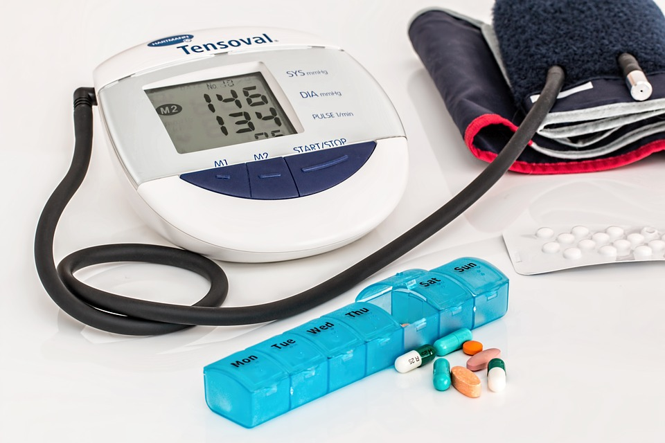
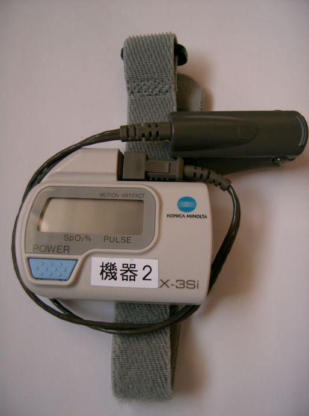

Software libre en la industria de equipamiento médico y tecnología sanitaria.
Nystagmeter, un ejemplo práctico
Industria médica
- Sensible
- Confidencialidad
- Seguridad
- Fiabilidad
Prototipado costoso
Sensorica y HW especifico y costoso en fases iniciales

Componentes cerrados

De KENPEI - KENPEI's photo, CC BY-SA 3.0, https://commons.wikimedia.org/w/index.php?curid=318025
- Poco (o nada) modificables
- Sin acceso funcional a los parametro de uso
- Lastre para la innovación
Y si...
¿Hubiera pruebas clinicas realizables con elementos de uso comun?
- Camaras + analisis de imagen
- Emisores + receptores de luz
- Emisión de impulso (zumbador) + respuesta de usuario